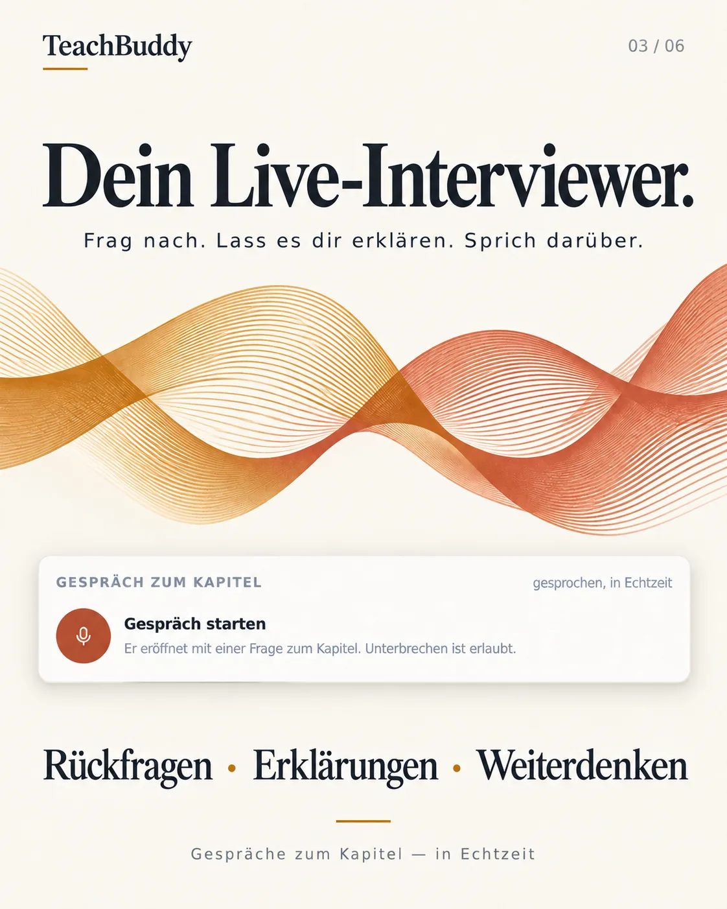
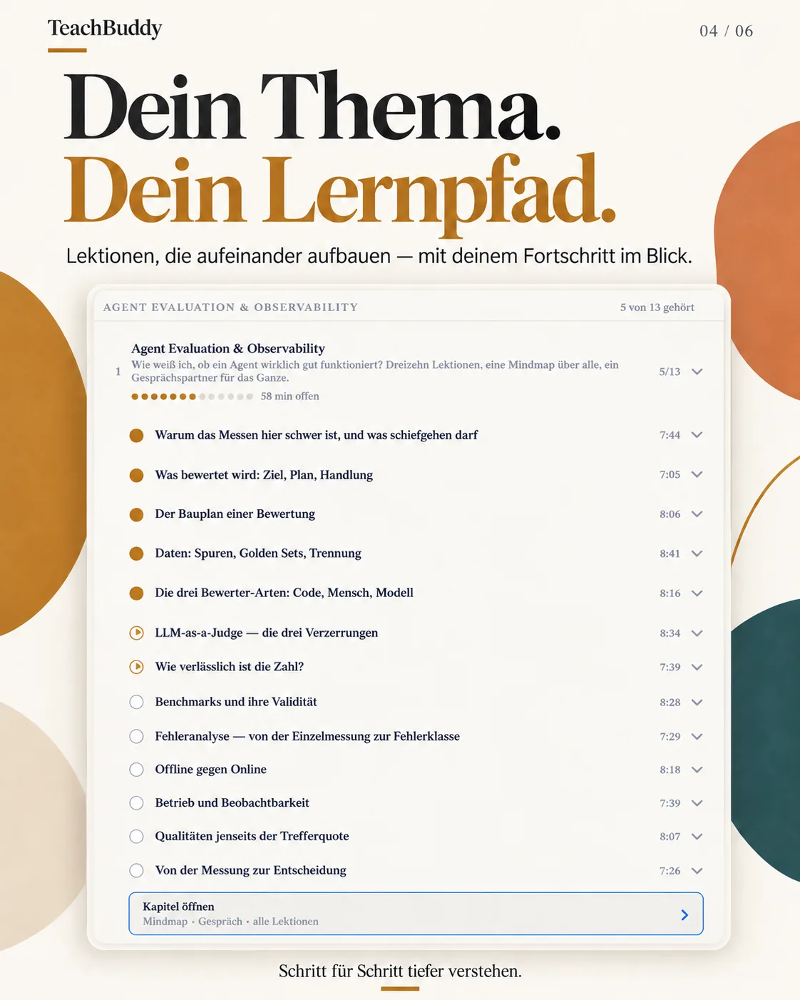
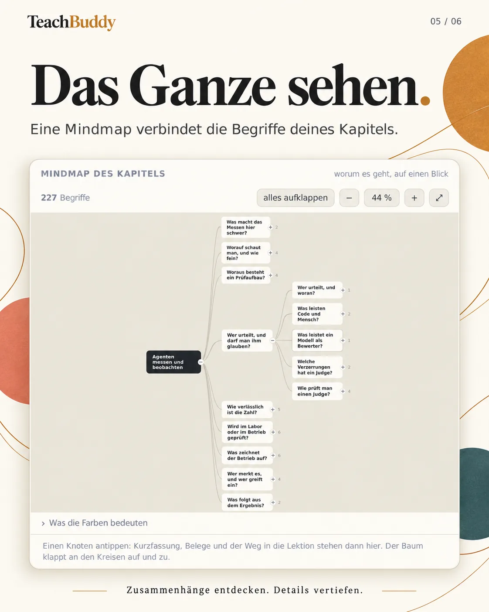
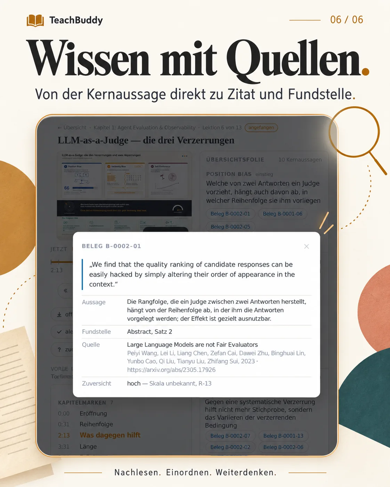

Dein eigener Kurs zu jedem Thema — als Podcast.
Agenten recherchieren, belegen und prüfen gegen. Heraus kommen Folgen zum Hören, Bilder, eine Mindmap und ein Gesprächspartner — und hinter jeder Aussage ihre Quelle.
Was dabei herauskommt
Sechs Wege in dasselbe Wissen.
Jede Wissenseinheit wird nur einmal geschrieben und dann so ausgespielt, wie du sie gerade aufnehmen kannst: hörend im Zug, schauend auf dem Sofa, sprechend beim Spaziergang. Die App läuft auf deinem Rechner und lässt sich aufs Telefon installieren.




Belegt, nicht behauptet
Hinter jeder Aussage eine Kette bis zur Quelle.
TeachBuddy trennt, was eine Quelle sagt, von dem, was daraus folgt. So lässt sich ein Deutungsfehler von einem Zitierfehler unterscheiden — und was keine Quelle trägt, steht als Einordnung markiert da. Ein echtes Beispiel aus der Demo — eine Aussage, die erst die Gegenprobe richtiggestellt hat:
Verordnung (EU) 2023/2854 (Data Act), amtlicher Text, Weiterverwendung erlaubt
„Where the mandatory maximum transitional period … is technically unfeasible, the provider … shall … indicate an alternative transitional period, which shall not exceed seven months.“
Ist die 30-Tage-Frist technisch nicht machbar, muss der Anbieter das binnen 14 Arbeitstagen begründen und eine Ersatzfrist von höchstens sieben Monaten nennen.
30 Tage als Regel, sieben Monate als begründete Ausnahme, einmal Verlängerung auf Wunsch des Kunden.
Folge, Bild und Übersichtsfolie; jede Kernaussage führt zu ihrem Beleg.
Vorher stand dort „30 Tage, verbindliche Obergrenze“. Die Gegenprobe hat das beanstandet, die Korrektur ist an der Quelle nachgeprüft — und dokumentiert.
Wie dein Kurs entsteht
Du sagst, was du lernen willst. Die Agenten bauen es — belegt. Du gibst frei.
Eine Warteschlange arbeitet Kapitel für Kapitel ab, über die Kommandozeilen von Claude Code und Codex. Zwei Modelle mit getrennten Rollen, damit keins seinen eigenen Text prüft. Was dabei entsteht, liegt als Änderung in deiner Bibliothek; gültig wird es erst mit deinem Commit.
Recherche
Quellen mit Lizenz und Abrufdatum, Fundstellen mit wörtlichem Zitat.
claudeWissen
Wissenseinheiten mit Belegen. Was das Material nicht trägt, wird als Lücke gemeldet.
claudeGegenprobe
Das andere Modell prüft jede Aussage gegen ihren Beleg.
codexPodcast
Skript, Belegprobe, Vertonung mit zwei Stimmen, Kapitelmarken.
codex · Azure TTSBild und Mindmap
Strukturanalyse, dann Infografik je Lektion; Gliederung je Kapitel.
codex · claudeFreigabe
Beanstandungen einarbeiten, Diff ansehen, committen. Erst dann gilt es.
du
Die Demo
Ein fertiges Kapitel, um zu sehen, was entsteht.
Mitgeliefert ist ein Kapitel aus einem Kurs über KI in der Praxis — mit TeachBuddy gebaut, gegengeprüft und nachgebessert.
Datenhoheit und Souveränität
Wohin Daten bei KI-Diensten gehen, wer darauf trainiert, was Verträge regeln und wie man wieder herauskommt.
- Verarbeitungsort
- Training auf Kundendaten
- Auftragsverarbeitung
- Offene Modelle
- Wechsel nach Data Act
Was du brauchst
Zum Lernen: Python — sonst nichts.
Fürs Gespräch: einen OpenAI-Schlüssel.
Für eigene Kurse: Claude Code und Codex (Abo oder Schlüssel), Azure-TTS, ffmpeg.
- jeder Baustein austauschbar
- läuft auch auf einem Raspberry Pi
Einrichten
Sag deinem Coding-Agenten: „Richte TeachBuddy ein.“
- Im Repo liegt ein Skill für Claude Code und Codex. Er klärt einmal, was du vorhast und welche Zugänge du hast, und führt dann durch alles.
- Installation, Demo, deine eigene Bibliothek, der erste Kurs bis zur Freigabe.
- Betrieb fürs Telefon: im WLAN mit Zugangscode, unterwegs über HTTPS.
- Lieber von Hand? Die Anleitung.
# holen und einrichten git clone https://github.com/niclaseschner-ship-it/teachbuddy.git cd teachbuddy python3 -m venv .venv && source .venv/bin/activate pip install -e . python start.py --pruefen # die Demo starten → http://127.0.0.1:5089/ python start.py --audio # oder gleich den Agenten fragen claude "Richte TeachBuddy ein"